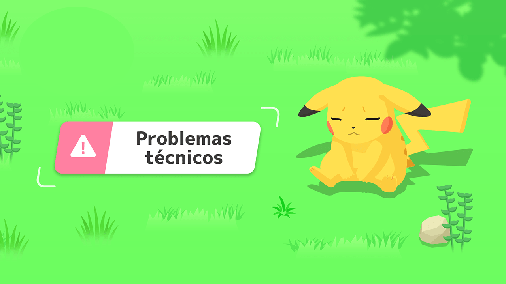

¿Qué tipo de problemas puedo reportar?
Puedes informar sobre errores en la Pokédex, datos incorrectos sobre regiones o problemas técnicos en la web.


En PokéWiki nos esforzamos por mantener la información actualizada y precisa. Si encuentras algún error, problema técnico o información incorrecta, puedes avisarnos a través de este formulario. Tu ayuda nos permite mejorar cada día y ofrecer una experiencia más completa para todos los fans de Pokémon.
¿Has encontrado un error o información incorrecta en PokéWiki? Rellena el siguiente formulario para que podamos revisarlo y corregirlo lo antes posible. ¡Gracias por tu colaboración!
Puedes informar sobre errores en la Pokédex, datos incorrectos sobre regiones o problemas técnicos en la web.
Normalmente respondemos en un plazo de 24 a 48 horas.
¡Sí! Apreciamos la colaboración de la comunidad. Si tienes datos verificados o correcciones, indícalo en el formulario.
No, puedes hacerlo directamente desde el formulario de contacto sin registrarte.
¡Sí, claro! Puedes encontrar nuestras redes sociales al final de la página, donde podrás escribirnos sobre cualquier duda o sugerencia que tengas